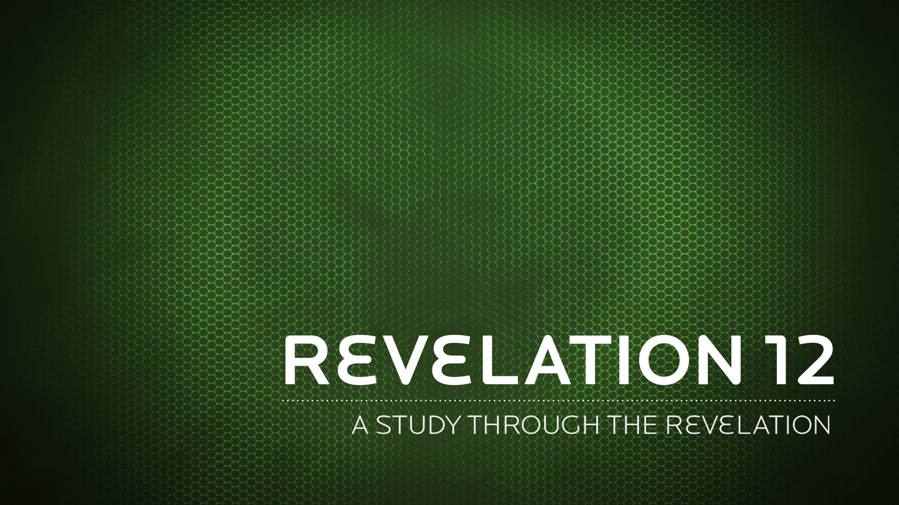

There will be great earthquakes, famines and pestilences in various places, and fearful events and great signs from heaven.
Luke 21:11 NIV
It was you who crushed the heads of Leviathan and gave him as food to the creatures of the desert.
Psalms 74:14 NIV
In that day, the LORD will punish with his sword, his fierce, great and powerful sword, Leviathan the gliding serpent, Leviathan the coiling serpent; he will slay the monster of the sea.
Isaiah 27:1 NIV
How you have fallen from heaven, O morning star, son of the dawn! You have been cast down to the earth, you who once laid low the nations!
Isaiah 14:12 NIV
You will rule them with an iron scepter; you will dash them to pieces like pottery.
Psalms 2:9 NIV
Go! I am sending you out like lambs among wolves.
Luke 10:3 NIV
The seventy-two returned with joy and said, “Lord, even the demons submit to us in your name.”
Luke 10:17 NIV
He replied, "I saw Satan fall like lightning from heaven.
Luke 10:18 NIV
Do not be surprised, my brothers, if the world hates you.
1 John 3:13 NIV
Be self-controlled and alert. Your enemy the devil prowls around like a roaring lion looking for someone to devour.
1 Peter 5:8 NIV